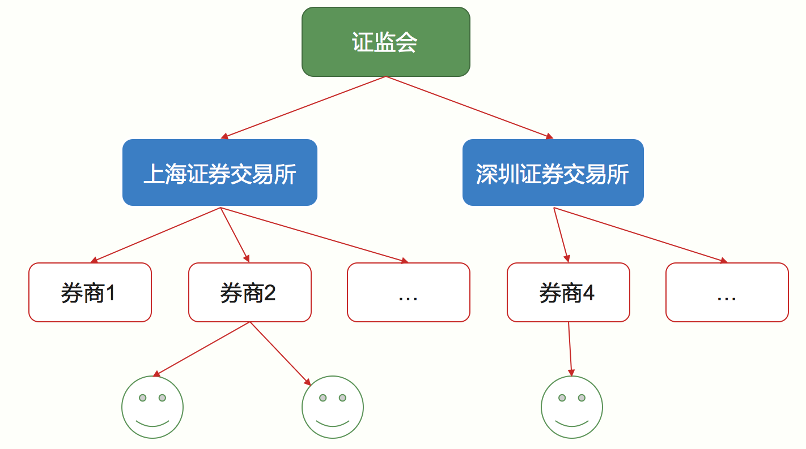
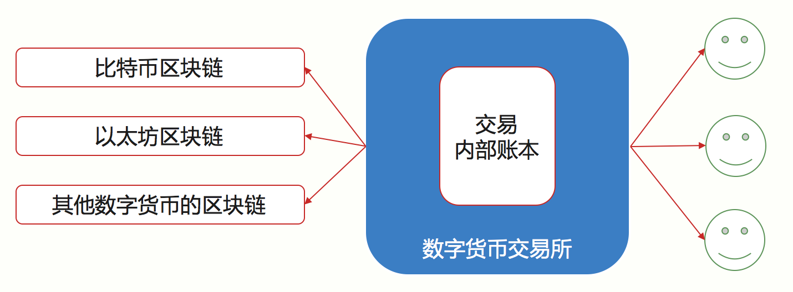
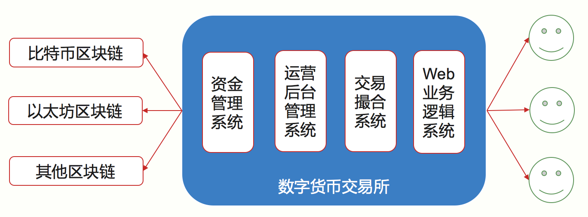

<!DOCTYPE html>
<html lang="en">
<head>
  <meta charset="utf-8">
  <meta http-equiv="X-UA-Compatible" content="IE=edge,chrome=1">
  <title>区块链学习--5数字货币与数字资产 - 超级阵雨的乌托邦星球</title>
  <meta name="renderer" content="webkit" />
<meta name="viewport" content="width=device-width, initial-scale=1, maximum-scale=1"/>

<meta http-equiv="Cache-Control" content="no-transform" />
<meta http-equiv="Cache-Control" content="no-siteapp" />

<meta name="theme-color" content="#f8f5ec" />
<meta name="msapplication-navbutton-color" content="#f8f5ec">
<meta name="apple-mobile-web-app-capable" content="yes">
<meta name="apple-mobile-web-app-status-bar-style" content="#f8f5ec">


<meta name="author" content="超级阵雨" /><meta name="description" content="5.1 比特币专题（一）历史与货币 5.1.1 比特币的逆袭史 比特币的历史总结起来大约有四个时期：创立前期、创立期、成长和稳定期。 创立前期 在比特币创立之前，世" />


<meta name="generator" content="Hugo 0.67.1 with theme even" />


<link rel="canonical" href="https://zhenyu0324.github.io/post/blockchain5/" />
<link rel="apple-touch-icon" sizes="180x180" href="/apple-touch-icon.png">
<link rel="icon" type="image/png" sizes="32x32" href="/favicon-32x32.png">
<link rel="icon" type="image/png" sizes="16x16" href="/favicon-16x16.png">
<link rel="manifest" href="/manifest.json">
<link rel="mask-icon" href="/safari-pinned-tab.svg" color="#5bbad5">


<link href="/sass/main.min.c7bc1becf36bcf6a9ebd25d2947e43a2eb745ddb0c9a32b43126fd7fa460c351.css" rel="stylesheet">
<link rel="stylesheet" href="https://cdn.jsdelivr.net/npm/@fancyapps/fancybox@3.1.20/dist/jquery.fancybox.min.css" integrity="sha256-7TyXnr2YU040zfSP+rEcz29ggW4j56/ujTPwjMzyqFY=" crossorigin="anonymous">


<meta property="og:title" content="区块链学习--5数字货币与数字资产" />
<meta property="og:description" content="5.1 比特币专题（一）历史与货币 5.1.1 比特币的逆袭史 比特币的历史总结起来大约有四个时期：创立前期、创立期、成长和稳定期。 创立前期 在比特币创立之前，世" />
<meta property="og:type" content="article" />
<meta property="og:url" content="https://zhenyu0324.github.io/post/blockchain5/" />
<meta property="article:published_time" content="2021-02-07T18:03:26+08:00" />
<meta property="article:modified_time" content="2021-02-07T18:03:26+08:00" />
<meta itemprop="name" content="区块链学习--5数字货币与数字资产">
<meta itemprop="description" content="5.1 比特币专题（一）历史与货币 5.1.1 比特币的逆袭史 比特币的历史总结起来大约有四个时期：创立前期、创立期、成长和稳定期。 创立前期 在比特币创立之前，世">
<meta itemprop="datePublished" content="2021-02-07T18:03:26&#43;08:00" />
<meta itemprop="dateModified" content="2021-02-07T18:03:26&#43;08:00" />
<meta itemprop="wordCount" content="8303">


<meta itemprop="keywords" content="区块链," /><meta name="twitter:card" content="summary"/>
<meta name="twitter:title" content="区块链学习--5数字货币与数字资产"/>
<meta name="twitter:description" content="5.1 比特币专题（一）历史与货币 5.1.1 比特币的逆袭史 比特币的历史总结起来大约有四个时期：创立前期、创立期、成长和稳定期。 创立前期 在比特币创立之前，世"/>

<!--[if lte IE 9]>
  <script src="https://cdnjs.cloudflare.com/ajax/libs/classlist/1.1.20170427/classList.min.js"></script>
<![endif]-->

<!--[if lt IE 9]>
  <script src="https://cdn.jsdelivr.net/npm/html5shiv@3.7.3/dist/html5shiv.min.js"></script>
  <script src="https://cdn.jsdelivr.net/npm/respond.js@1.4.2/dest/respond.min.js"></script>
<![endif]-->

</head>
<body>
  <div id="mobile-navbar" class="mobile-navbar">
  <div class="mobile-header-logo">
    <a href="/" class="logo">超级阵雨的乌托邦星球</a>
  </div>
  <div class="mobile-navbar-icon">
    <span></span>
    <span></span>
    <span></span>
  </div>
</div>
<nav id="mobile-menu" class="mobile-menu slideout-menu">
  <ul class="mobile-menu-list">
    <a href="/">
        <li class="mobile-menu-item">Home</li>
      </a><a href="/post/">
        <li class="mobile-menu-item">Archives</li>
      </a><a href="/tags/">
        <li class="mobile-menu-item">Tags</li>
      </a><a href="/categories/">
        <li class="mobile-menu-item">Categories</li>
      </a><a href="/about/">
        <li class="mobile-menu-item">About</li>
      </a>
  </ul>
</nav>
  <div class="container" id="mobile-panel">
    <header id="header" class="header">
        <div class="logo-wrapper">
  <a href="/" class="logo">超级阵雨的乌托邦星球</a>
</div>

<nav class="site-navbar">
  <ul id="menu" class="menu">
    <li class="menu-item">
        <a class="menu-item-link" href="/">Home</a>
      </li><li class="menu-item">
        <a class="menu-item-link" href="/post/">Archives</a>
      </li><li class="menu-item">
        <a class="menu-item-link" href="/tags/">Tags</a>
      </li><li class="menu-item">
        <a class="menu-item-link" href="/categories/">Categories</a>
      </li><li class="menu-item">
        <a class="menu-item-link" href="/about/">About</a>
      </li>
  </ul>
</nav>
    </header>

    <main id="main" class="main">
      <div class="content-wrapper">
        <div id="content" class="content">
          <article class="post">
    
    <header class="post-header">
      <h1 class="post-title">区块链学习--5数字货币与数字资产</h1>

      <div class="post-meta">
        <span class="post-time"> 2021-02-07 </span>
        <div class="post-category">
            <a href="/categories/%E5%AD%A6%E4%B9%A0%E7%AC%94%E8%AE%B0/"> 学习笔记 </a>
            </div>
          <span class="more-meta"> 8303 words </span>
          <span class="more-meta"> 17 mins read </span>
        
      </div>
    </header>

    <div class="post-toc" id="post-toc">
  <h2 class="post-toc-title">Contents</h2>
  <div class="post-toc-content always-active">
    <nav id="TableOfContents">
  <ul>
    <li>
      <ul>
        <li><a href="#51-比特币专题一历史与货币">5.1 比特币专题（一）历史与货币</a>
          <ul>
            <li><a href="#511-比特币的逆袭史">5.1.1 比特币的逆袭史</a></li>
            <li><a href="#512-比特币的意义">5.1.2 比特币的意义</a></li>
            <li><a href="#512-bip-及其发展">5.1.2 BIP 及其发展</a></li>
          </ul>
        </li>
        <li><a href="#52-比特币专题二扩容之争ifo与链上治理">5.2 比特币专题（二）：扩容之争、IFO与链上治理</a>
          <ul>
            <li><a href="#521-扩容之争">5.2.1 扩容之争</a></li>
            <li><a href="#522-扩容之争引起的-ifo">5.2.2 扩容之争引起的 IFO</a></li>
            <li><a href="#523-链上治理">5.2.3 链上治理</a></li>
          </ul>
        </li>
        <li><a href="#53-数字货币和数字资产">5.3 数字货币和数字资产</a>
          <ul>
            <li><a href="#531-区块链应用范围统计">5.3.1 区块链应用范围统计</a></li>
            <li><a href="#532-从数字货币到数字资产">5.3.2 从数字货币到数字资产</a></li>
            <li><a href="#535-数字资产的宏观分类">5.3.5 数字资产的宏观分类</a></li>
            <li><a href="#536-数字资产的属性分类">5.3.6 数字资产的属性分类</a></li>
          </ul>
        </li>
        <li><a href="#54-弄懂数字货币交易平台一">5.4 弄懂数字货币交易平台（一）</a>
          <ul>
            <li><a href="#541-交易的两种模式">5.4.1 交易的两种模式</a></li>
            <li><a href="#542-传统交易所的运作流程">5.4.2 传统交易所的运作流程</a></li>
            <li><a href="#543-数字资产交易平台">5.4.3 数字资产交易平台</a></li>
            <li><a href="#544-数字货币交易平台的三种类型">5.4.4 数字货币交易平台的三种类型</a></li>
          </ul>
        </li>
        <li><a href="#55-弄懂数字货币交易平台二">5.5 弄懂数字货币交易平台（二）</a>
          <ul>
            <li><a href="#551-两套账本">5.5.1 两套账本</a></li>
            <li><a href="#552-数字货币交易所包含哪些系统模块">5.5.2 数字货币交易所包含哪些系统模块</a></li>
            <li><a href="#553-各自模块的特征">5.5.3 各自模块的特征</a></li>
          </ul>
        </li>
      </ul>
    </li>
  </ul>
</nav>
  </div>
</div>
    <div class="post-content">
      <h2 id="51-比特币专题一历史与货币">5.1 比特币专题（一）历史与货币</h2>
<h3 id="511-比特币的逆袭史">5.1.1 比特币的逆袭史</h3>
<p>比特币的历史总结起来大约有四个时期：创立前期、创立期、成长和稳定期。</p>
<p><strong>创立前期</strong></p>
<p>在比特币创立之前，世界上已有多种类似技术产品，最早的是 Ecash 协议，接着 Ecash 又有多种数字货币产品出现，其中以亚当·贝克的“Hashcash”和戴维 (Wei Dai) 的“B-money”、尼克·萨博的“Bit-gold”，以及哈尔·芬尼在“Hashcash”技术上发展出来的“RPOW”等技术产品。</p>
<p><strong>创立期</strong></p>
<p>2008 年 11 月，中本聪发表了比特币的白皮书《比特币：一种点对点的电子现金系统》，接下来的时间中本聪实现了他所描述的比特币系统。</p>
<p>2009 年 1 月 3 日，比特币网络正式开始运行。</p>
<p>2009 年 1 月 9 日，Bitcoin v0.1 版本发布，12 日中本聪进行了第一次交易，这一次交易中，中本聪给海尔发送了 10 个比特币。</p>
<p>2009 年秋天, 一个叫“新自由标准”的用户通过 Paypal 支付了 5.02 美元，购买了 5050 个比特币，折合 0.000994 美元一个比特币，这是比特币和法币的第一次兑换。</p>
<p>2009 年到 2010 年初，已经有一些其他的开发者被逐渐吸引过来，大家一起开发、维护、挖矿，那时候普通电脑还可以挖到比特币。</p>
<p>2010 年 4 月, 一个叫拉斯诺的人发现可以使用 GPU 来挖比特币，5 月 22 日，他用挖到的比特币购买了两个比萨，共花费 10000BTC，这是比特币第一次被用于实物支付，也就是著名的比特币披萨事件。</p>
<p>2010 年 7 月，世界上第一家比特币交易所在日本东京成立，名叫 Mt.Gox，中文“门头沟”。</p>
<p><strong>成长期和稳定期</strong></p>
<p>2014 年 2 月，发生“门头沟事件”，门头沟交易所被黑一事震惊全球，比特币价格应声跳水；</p>
<p>2014 年 6 月，以太坊开始了为期 42 天的 ICO，众筹使用的是 BTC；</p>
<p>2017 年 11 月 28 日，比特币价格超过一万美元。</p>
<h3 id="512-比特币的意义">5.1.2 比特币的意义</h3>
<p>首先比特币没有通常意义上的实用价值，不单单是比特币，所有的信用货币，包括黄金白银在内都不具备实用价值。</p>
<p>这里的实用价值是指解决人的低层次需求，如果按照马斯洛需求层次理论来分，是指衣食住行等生存需求。</p>
<p>比特币到底有什么不同？它的意义超过信用货币吗？我个人认为是超过的。老生常谈的去中心化、防篡改我这里就不谈了，我们接下来换几个角度来聊聊它。</p>
<p><strong>1.无国界的共识</strong></p>
<p>它打破了一般信用货币的局限性，我称作无国界的共识。</p>
<p>比较常见的论调，比特币你信它就有价值，不信就什么用途也没有。这里隐含的语义是“承认过程”。</p>
<p><strong>2.记账是本职</strong></p>
<p>比特币的本职是记账，不要想得太复杂，它就是来帮你记账的。例如你在宜家买了一套家具，比特币可以帮你记下来，当然不是说这个事件，而是帮你记录价值转移，你动用了你曾经创造的价值的多少（BTC）来购买这套家具。</p>
<p>这个记账过程防篡改能力非常强，几乎没人能操控，也没有国界之分，只要你的交易方承认比特币，这笔买卖就可以达成。</p>
<p><strong>3.高效的资源调度</strong></p>
<p>比特币使用的是 PoW 算法，这个需要消耗大量能源进行挖矿的算法一直被人诟病；但是结合上述记账本职，我们也换个角度来看看这件事。</p>
<p>目前全国的电力分配不均，中国的内蒙东北有着丰富的风力电，可惜这些富余的电力难以调度，超高压输电线路造价高昂，甚至超出了电厂本身。</p>
<p>而比特币挖矿恰好需要极大地耗费能源，如果在偏远的资源丰富地区进行挖矿，相当于将架设超高压输电线路蜕化为网络通信设施，地方政府可以把庞大的风电资源转化成比特币，最多只需要十分钟，就可以在资本市场变现。所以每个人每次使用比特币的过程，相当于让偏远地区获得了平等参与社会运作的过程。</p>
<p><strong>4. 三权分立的社区自治形态</strong></p>
<p>这里讨论的三权分立的形态，并不是指政府组织结构的形式，而是指矿工、开发者、投资者三者组成了相互制衡的数字货币的治理形态。</p>
<p>比特币并没有真正意义上完全地去中心化，在记账权上，它目前被 5 大矿池所把持。当人们抨击 EOS 的 21 个节点有中心化的嫌疑时，BM 总是拿出比特币矿池的例子来反击。</p>
<p>实际上这里偷换了概念，比特币中矿工的权力其实是有限的。</p>
<ul>
<li>技术限制</li>
</ul>
<p>由于 PoW 的特性，矿工无法进行长程攻击（Long Range Attack），篡改和分叉的边际成本随着篡改的区块数量线性攀升</p>
<ul>
<li>开发者制衡</li>
</ul>
<p>扩容之争是很好的例子，我们下一篇会详细介绍，矿工是逐利的，而开发者决定了比特币的长期发展，所以从某种意义上来说，作弊不如和开发者合作。</p>
<ul>
<li>投资者制衡</li>
</ul>
<p>矿工是比特币的直接利益相关者，无论是社区分歧还是主链分叉，矿工首先确保的是收益稳定，黑天鹅事件造成的巨大价格波动是不利于收益预期的。</p>
<h3 id="512-bip-及其发展">5.1.2 BIP 及其发展</h3>
<p>比特币 BIP（Bitcoin Imrpovement Proposals) 是一种设计文档，用来描述比特币新特性的提案，第一个比特币 BIP 是 2011 年 8 月 19 号一个名为 Amir Taaki 的人提交的，编号 bip001，它描述了 BIP 本身是什么。</p>
<p>随后几年直到现在，比特币的 BIP 编号将近 200 个，它展示了比特币强大的社区协作能力。</p>
<p>很多人认为某个区块链项目一旦上线这个链就稳了，实际上，做公链好比一场没有尽头的马拉松长跑，主网上线表示长跑开始，接下来才是真正拼实力的时候。</p>
<p>具体怎么拼？则要看 IP（Improvement Proposal）。可以说 IP 代表了一个区块链项目的生命力。例如 HD 账户是 bip32 和 bip39 提出的，最开始的比特币是没有这个功能的，隔离见证也是由一系列 bip 组成的。</p>
<h2 id="52-比特币专题二扩容之争ifo与链上治理">5.2 比特币专题（二）：扩容之争、IFO与链上治理</h2>
<h3 id="521-扩容之争">5.2.1 扩容之争</h3>
<p>扩容之争是比特币历史上影响较大的事件，它也是比特币社区治理的经典案例。扩容之争的背后其实是社区治理的难题：如何让社区达成一致。</p>
<p>扩容的需求是由于比特币的使用人数逐渐增长，于是比特币的网络也日益拥堵。关于如何解决这种网络拥堵的问题，比特币社区出现了两种不同的解决方案。</p>
<p>方案一：极端扩容，直接将区块的上限进行扩容，它的优点是可以快速解决问题，缺点是十分直接，只能舒缓一时的拥堵，并没有从根本上解决问题，更不能带来新的特性。
方案二：隔离见证，要求坚守 1MB 的容量上限，通过隔离见证的方法绕过 1MB 的限制。这种方式改动比特币交易的结构，它的优点是结构的改变可以带来崭新的特性，缺点也不少，不但花费的时间较长，用户的使用感知也并不算完美。</p>
<p>社区就上述的两种方案，产生了不同的分歧，分为以下几派：</p>
<ol>
<li>极端扩容派</li>
<li>隔离见证派</li>
<li>调停和解派系&mdash;-打太极</li>
</ol>
<h3 id="522-扩容之争引起的-ifo">5.2.2 扩容之争引起的 IFO</h3>
<p>扩容之争基本在 2017 年 11 月结束，比特币硬分叉出比特币现金已经成了定局。比特币现金的出现还带来了一件新事物，就是 IFO——Initial Fork Offering，也就是分叉比特币形成新的数字代币，这其实就是 ICO 的替代品。</p>
<p><em>这里要提一句，2017 年 9 月 4 号七部委发文明令禁止 ICO，所有和人民币挂钩的交易所都必须限期关闭。</em></p>
<p>ICO 的中文名是首次代币发行，又称为区块链众筹，这是一种新型的融资模式，投资者可以用手中的比特币或其他代币投到其他的区块链创始项目。</p>
<p>ICO 从本质上来说就是一纸白皮书，接下来全靠吹，忽悠散户投币，“我要出一个新的代币了，你们快来买吧。”</p>
<p>而 IFO 的集资依靠的是与比特币的关联，“我要出一个代币了，这个代币是由比特币分叉出来的哦，你们快来买吧！”靠着与比特币的连带性，IFO 打了一记集资的擦边球。</p>
<p>所以国内诸多项目方和经验资深的投资方一拍即合，搞 IFO 吧。但是 IFO 比 ICO 限定在只能从比特币上分叉，所以技术的发挥仍然有限。</p>
<h3 id="523-链上治理">5.2.3 链上治理</h3>
<p>链上治理指的是人们直接在区块链发起社区提案，并进行决策的过程。</p>
<p>这里首先要求的是链上支持基本治理协议，这套协议可以规定或强制执行提案，链上治理直接决定了区块链本身的发展方向。链上治理的参与方包括了投资者、使用者、开发者、矿工四类人群。</p>
<p>链上治理与链下治理的区别在于，区块链本身是否提供强制执行的机制让少数服从多数。</p>
<p><strong>各种类型的链上治理</strong></p>
<ol>
<li>
<p>比特币 BIP 和区块投票</p>
</li>
<li>
<p>以太坊 Gas limit 投票</p>
</li>
<li>
<p>比特股 BTS 和柚子 EOS 的链上治理</p>
</li>
</ol>
<p><strong>链上治理的几个问题</strong></p>
<ol>
<li>
<p>升级的实际执行者矿工总是理性的，也就是追求自身利益最大化。</p>
</li>
<li>
<p>惰性投票，只有很少一部分人会真正地去投票。</p>
</li>
<li>
<p>投票权过度集中，大户持有者往往话语权更重。</p>
</li>
</ol>
<p>链下治理相比链上治理，更接近我们现实社会的方式。链上治理不是一个设计问题，它是社区制度问题，“如何让区块链更好地发展”相比“区块链项目应当设定什么样的发展目标”，是排在第二位的。</p>
<p>社区在自身追求目标的过程中，会自发地找到最佳治理结构，人为设计可能会有诸多漏洞和缺陷，也限制了可开发性。</p>
<p>例如链上治理至少存在以下几个问题。</p>
<ol>
<li>公地悲剧</li>
</ol>
<p>当所有人都觉得别人会投票的时候，也就没有人投票了，这个典型案例是英国脱欧公投。</p>
<p>2.女巫攻击</p>
<p>目前区块链很难映射现实中人的身份，如果按照身份去投，大户是可以扮演多个伪造身份进行投票的，在产生区块链数字身份之前，链上治理只能依托于币的数量进行权重投票。这便造成一个代币一票，持币多的选民有更大的话语权。</p>
<p>3.贿选</p>
<p>这其实是女巫攻击的延伸，链上治理节点可以承诺将获得的收益与其他节点进行分享，这种拉票方式其实就是贿选，如果恶意节点可以通过贿赂成为记账节点，进而左右区块链的升级过程，后果非常可怕。</p>
<h2 id="53-数字货币和数字资产">5.3 数字货币和数字资产</h2>
<h3 id="531-区块链应用范围统计">5.3.1 区块链应用范围统计</h3>
<p>据统计，截止 2018 年 3 月，全球数字货币共计 1500 多种，总市值超 3200 亿美元。然而市值分布占比不够分散，单比特币就占了一半市值，剩下以太坊、瑞波币、比特币现金等数字货币占了另外一半。</p>
<p>大致来分，目前区块链首先在金融领域发力，其次在信息通讯、底层基础设施、教育、能源、医疗等行业应用地比较广泛。</p>
<p>从占比来看，金融和信息通讯类占比最高，占所有区块链项目类型接近七成。</p>
<h3 id="532-从数字货币到数字资产">5.3.2 从数字货币到数字资产</h3>
<p>数字货币是数字资产的清算底层，数字资产的经济活动依赖数字货币。</p>
<p>数字货币一般只能是公链项目，数字资产依靠公链生态提供，这种支撑型结构决定了数字货币的种类不会很多，而数字资产会非常多。</p>
<p>比特币本身是最成功的数字货币项目，同时也是最成功的区块链项目。</p>
<p><strong>比特币的应用生态主要集中在全球无国界支付结算上，由于比特币本身是一种原生资产，它没有与任何其他资产锚定，所以比特币的应用生态取决于人们的共识，这点比特币已经做到了。</strong></p>
<p>只要比特币的社区不发生大的动乱，那么比特币的地位是很难超越的，尽管有诸多崭新的区块链技术冒出来，如提升共识效率、提升网络容量等等。</p>
<p>但是比特币的共识经过了近十年的历史开创，形成成熟稳定的生态结构，这一点在技术上是无法取代的。</p>
<p><strong>数字货币</strong>：</p>
<ol>
<li>原生数字货币</li>
</ol>
<p>原生型数字货币特点：</p>
<ul>
<li>非营利性社区自治；</li>
<li>依赖社会共识承认；</li>
<li>超级结算工具；</li>
<li>可用于支持数字资产。</li>
</ul>
<ol start="2">
<li>锚定型数字货币</li>
</ol>
<p>锚定型数字货币特点：</p>
<ul>
<li>商业性自治；</li>
<li>依赖广泛的承兑商；</li>
<li>稳定的支付结算工具；</li>
<li>可用于支持数字资产。</li>
</ul>
<h3 id="535-数字资产的宏观分类">5.3.5 数字资产的宏观分类</h3>
<p>数字资产所产生的金融我们称为数字金融，国内又称为通证和通证经济。</p>
<p>Token 是数字资产最直接的表现形式，Token 的生态结构具有自发和原生性，大致可以分成这几种类型。一种是基础设施型生态，一种是金融型生态，还有一种是商业垂直应用生态，这三种生态都非常有潜力。</p>
<h4 id="5351-基础设施型-token">5.3.5.1 基础设施型 Token</h4>
<p>基础设施一般就是指公链的权益代币，很多公链都在做这个领域的研究，当然这也是最迫切需要被突破的，有了成熟的基础设施，区块链应用才得以广泛普及。</p>
<p>这类的 Token 的典型是以太坊上的以太币 Ether，除了以太坊，还有 EOS、NEO 等，可以说能够支持发行 Token 的公链都具有较高的潜在价值，它们目前处于军阀混战时期，后期是垂直细分还是一统江山很难判断。</p>
<p>另外基础设施型 Token 本身也具备数字货币的功能。</p>
<h4 id="5352-金融型-token">5.3.5.2 金融型 Token</h4>
<p>这类 Token 的典型是 Tether、bitCNY 等锚定型数字货币，以及交易平台的 Token，例如火币的 HT、OKEX 的 OKB 和币安的 BNB。</p>
<p>这类 Token 的典型特点是在为原生数字资产创造流动性，它是数字金融发展的必然结果。</p>
<p>金融型 Token 有点接近证券，只能在流动性高的地方产生，例如数字资产交易所、承兑平台。</p>
<h4 id="5353商业垂直生态型-token">5.3.5.3商业垂直生态型 Token</h4>
<p>这一类 Token 具有非常大的商业潜力，释放的能量也是最大的，这里当然不是指单个 Token，而是某个商业生态形成的一类 Token。</p>
<p>例如游戏直播平台可以打通形成一类 Token，文化产权也可以打通形成一类 Token。这类 Token 是非常好的连接器，连接局部商业，在行业内部形成流动市场。</p>
<blockquote>
<p>最后我们总结一下，以上三类 Token 依赖关系是：</p>
<ol>
<li>
<p>商业垂直生态型 Token 依赖基础设施型 Token；</p>
</li>
<li>
<p>金融型 Token 依赖基础设施型 Token；</p>
</li>
<li>
<p>商业垂直生态型 Token 可能依赖金融型 Token。</p>
</li>
</ol>
</blockquote>
<blockquote>
<p>Token 的流动性大小依次是：</p>
<p>基础设施型 Token &gt; 金融型 Token &gt; 商业垂直生态型 Token</p>
<p>Token 的种类数量分布依次是：</p>
<p>商业垂直生态型 Token &gt; 金融型 Token &gt; 基础设施型 Token</p>
</blockquote>
<h3 id="536-数字资产的属性分类">5.3.6 数字资产的属性分类</h3>
<h4 id="5361-普通-token">5.3.6.1 普通 Token</h4>
<ol>
<li>
<p>积分型。这种 Token 可能比较常见，因为我们经常遇到，例如超市积分，产品积分等等，这种在产品运营上可能换了一种形式，相比较原来的积分体系，流动性可能有所提升。</p>
</li>
<li>
<p>会员型。大多数会员制的营销方式，相当于是使用权预售，例如苹果手机预售发行，不必局限在某个渠道商，可以以发行 Token 的方式进行预售。这种类型的 Token 也可以映射到当下现实场景中去。</p>
</li>
<li>
<p>分红型。这种类型的 Token 典型是币安的 BNB，利润回购是分红型 Token 常见的手段，但由于操作不够透明，很可能会遇到问题。</p>
</li>
</ol>
<h4 id="5362-价值型-token">5.3.6.2 价值型 Token</h4>
<p><strong>特点</strong></p>
<ol>
<li>使用权，表示 Token 可交付产品或服务；</li>
<li>可交易，流动性是数字资产的基本需求；</li>
<li>可升值，这是由第二条带来的附加属性，也就是升值。</li>
</ol>
<h2 id="54-弄懂数字货币交易平台一">5.4 弄懂数字货币交易平台（一）</h2>
<h3 id="541-交易的两种模式">5.4.1 交易的两种模式</h3>
<p>先来说说交易模式，交易模式分为两种：场内交易和场外交易。</p>
<ul>
<li>
<p>场内交易，又称成交单优先模式，指的是有交易场所将买卖双方聚集在一起，进行竞价交易的交易方式。这种交易方式中，交易场所负责用户的资产托管、交易撮合、资产结算、履约担保等功能。</p>
</li>
<li>
<p>场外交易，又称报价单优先模式，指的是买卖方不通过第三方而直接成为交易对手的交易方式。</p>
</li>
</ul>
<h3 id="542-传统交易所的运作流程">5.4.2 传统交易所的运作流程</h3>
<p>区块链领域的交易所与传统金融的结构十分相似，但也存在了一些区别，为了讲清楚这种区别，我先简述一下证券交易的结构。</p>
<p>传统一般有四种角色，分别是投资者，在国内大部分是散户，其次是证券公司，接着是交易场所，这里的交易场所仅指场内交易场所，最后是证监会。它们的关系如下图。</p>
<p></p>
<p>通常投资者在证券公司开户，然后投资者委托证券公司下单，证券公司接受投资者下单并收取一定的佣金，然后买卖单由证券公司在交易场所进行交易，这个过程叫做委托，投资者是委托者，证券公司是受托者。</p>
<p>换句话说，普通投资者是无法直接接触交易所的，这是因为交易所采取会员制，只有成为交易所的会员且有交易席位，才可以接收其他投资者的委托，所以这就限定了机构投资者，也就是证券公司了。</p>
<p>而这里交易所是非盈利性的事业法人，它接受国家证券主管机关证券委员会及证监会的领导、管理和监督。证券交易所本身并不参与证券交易，不能决定证券价格。</p>
<p>所以对于投资者来说，只和证券公司有直接联系，这里的流程可以简述为：</p>
<ol>
<li>投资者到证券公司开户，然后下单给证券公司；
2 证券公司再将这些订单传递到交易所，订单在交易所完成撮合成交；</li>
<li>接着交易所将订单和成交数据传到证券登记结算公司，结算公司据此进行资金和证券账户的结算；</li>
<li>结算结果再回传给证券公司，证券公司通过自己的平台显示给投资者，例如成交信息，账户余额等等。</li>
</ol>
<h3 id="543-数字资产交易平台">5.4.3 数字资产交易平台</h3>
<p>数字货币交易平台也叫做数字资产交易平台，主要为人们提供交易数字货币或数字资产撮合交易服务。</p>
<p>这种交易市场是一种典型的买单、卖单交易市场，所以这些平台以场内交易为主，通过提供买单卖单的撮合服务然后赚取手续费，这个过程中也发展出了层次丰富的金融工具，例如杠杆交易。</p>
<p>人们提供了买、卖交易数字资产的过程，这个过程是一种数字货币交换到另外一种数字货币的过程。</p>
<p>这种交易市场通常是数字货币对数字货币的，当然这显然不够，所以这就催生了法币对数字货币的交易，这也是中心化交易平台的由来，目前流行的法币与数字货币的交易有美元、欧元、日元、澳元等。</p>
<p>传统交易所依赖券商，属于金字塔型结构，用户聚集在券商处，资金托管在银行，证券登记结算在第三方机构，本质上交易场所只提供了撮合、监管辅助、信息辅助等功能。</p>
<p>而由于数字货币的去中心化特性，数字货币交易平台属于扁平型结构，资产管理本身就内置在交易所内部。</p>
<p>所以任何一个交易平台都不需要第三方机构登记结算数字货币，这带来了业务架构上的易部署特性，用户流量和资金流量最终全部汇聚在数字货币交易所。</p>
<p>虽然利润和流量都超大，但中心化交易平台也面临了一些天花板，例如动不动就被爆出被黑事件，这也着实让用户提心吊胆，所以我归纳了一些如下缺点：</p>
<ol>
<li>内幕操作，交易所相当于是一个黑盒，内部操作不透明带来了巨大风险；</li>
<li>监管缺失，信息披露不完善，项目方跑路风险；</li>
<li>持仓风险，用户的资金完全托管在交易所；</li>
<li>趋利优先，区块链本身的发展是在盈利之后才会被考虑的；</li>
<li>交易所破产倒闭风险。</li>
</ol>
<h3 id="544-数字货币交易平台的三种类型">5.4.4 数字货币交易平台的三种类型</h3>
<p><strong>模式一：中心化模式</strong></p>
<p>资金管理系统与区块链账本各自记账，包含充币提币的过程，需要人工干涉。模式一的代表有很多，现在市场上主流的交易所主要的有 Binance、Bittrex、Bitfinex、Gate.io、Huobi.pro、Okex、Kraken 等，它们为数字货币和数字资产的发展提供了全球化、7*24 小时不间断的流动性，也就是上文我们介绍的数字货币交易平台。</p>
<p><strong>模式二：半中心化模式</strong>
半中心化模式，交易撮合与行情模块是中心化的，而资产是在区块链上直接结算的。代表有 0x Project、Keyber Network 这些前沿的项目。</p>
<p><strong>模式三：完全去中心化模式</strong></p>
<p>完全去中心化模式 ，比模式二更进一步，所有模块都是去中心化的，包括交易撮合和行情部分。代表有比特股和 EtherDelta。</p>
<p>比模式二更进一步，所有模块都是去中心化的，包括交易撮合和行情部分。代表有比特股和 EtherDelta。</p>
<p>模式二和模式三我们统称为去中心化交易所，目前是区块链数字资产领域研究的一个前沿方向，多数方案都还不成熟，例如用户产品体验差、稳定性不足、数字货币流动性不足等等，当然更多还处于研发阶段。</p>
<h2 id="55-弄懂数字货币交易平台二">5.5 弄懂数字货币交易平台（二）</h2>
<p><strong>中心化模式下的数字货币交易平台</strong></p>
<h3 id="551-两套账本">5.5.1 两套账本</h3>
<p>数字货币交易平台的技术基本沿用了金融交易技术中的系统架构，只是把原来针对法币和证券（或平台代币）的部分，也就是我们通常称作资金管理系统的部分，完全替换为针对数字货币的数字货币管理系统，换句话说，就是换了一套内部账本。</p>
<p>然而我们知道，区块链本身也是用来记账的，也算作一种金融账本，所以一套内部账本，一套区块链本身的账本，这里就出现了两套账本，如何管理这两套账本，就是资金管理系统的首要任务。</p>
<p></p>
<p>解释一下这张图，图的左边表示了多个区块链账本，右边的数字货币交易所有自己的内部账本，这两套账本是独立的。</p>
<p>交易所内部的账本记录的是交易 Trade，这个交易是由用户挂单，接着被撮合引擎撮合成交而产生的，而区块链账本上的交易 Transaction，是当且仅当用户发起充币提币请求并被执行时，才会产生的。</p>
<p>这两种交易都用了中文“交易”来表示，但是它们所属的语境不同，前者的交易表示的是金融交易语境下的资产交换，也就是 Deal；后者表示的是区块链上的技术概念，表示资产转移的一次记账过程，上述特意用英文以表区别，希望你能够区分。</p>
<h3 id="552-数字货币交易所包含哪些系统模块">5.5.2 数字货币交易所包含哪些系统模块</h3>
<p>一个数字货币交易所的后端其实至少有四部分构成：Web 业务逻辑系统、交易撮合系统、运营后台管理系统、资金管理系统。资金管理系统其实就是刚才说到的内部账本。</p>
<p></p>
<p>Web 业务逻辑系统：这个模块通常包含了用户账户模块、登录网关、账户安全管理、KYC 认证、行情推送等等，这个模块更偏向用户，也与通常的电商账户系统十分类似。
交易撮合系统：这个模块是一个交易所的核心模块，为所有的用户提供订单撮合。
运营后台管理：这个模块是一个交易所运营人员使用的系统，交易所内部人员才能访问。
资金管理系统：这里的资金管理其实包含了三部分，第一部分是法币的支付网关，可能需要对接银行或第三方支付机构；第二部分就是数字货币钱包管理，它提供了大部分主流数字货币的支付功能；第三部分是用户持仓信息，所谓持仓就是用户持有多少数字货币，这个是记录在数据库中的，不需要与区块链保持一致，但是要求交易所的总账是平的。</p>
<h3 id="553-各自模块的特征">5.5.3 各自模块的特征</h3>
<ul>
<li>
<p>Web 业务系统与我们常见的电商系统无异，主要是用户账户以及简单的业务逻辑，重点是可扩展性，业务要求比较弹性。</p>
</li>
<li>
<p>交易撮合系统本质上是一个高并发的计算系统，特点是系统性能高和稳定性好，其中订单队列可以是编程语言中的数据容器，也可以是内存数据库。</p>
</li>
<li>
<p>运营后台系统在整个交易所生命周期的早期并不凸显重要性，但是运营后台系统恰恰是交易所中后期发展的核心系统，重点在数据准确，要求网络安全性高和可扩展性好。</p>
</li>
<li>
<p>资金管理系统包含用户持仓状态，以及数字货币钱包服务，它是一个交易平台中安全性要求最高的系统，资金管理系统往往要搭配一个内存数据库，其中数字货币钱包服务也可以拆出来做成独立子系统，甚至可以改造成整个公司的内部区块浏览器，因为钱包服务需要设计成多个钱包实例，并统一所有的币种钱包接口。</p>
</li>
</ul>

    </div>

    <div class="post-copyright">
  <p class="copyright-item">
    <span class="item-title">Author</span>
    <span class="item-content">超级阵雨</span>
  </p>
  <p class="copyright-item">
    <span class="item-title">LastMod</span>
    <span class="item-content">
        2021-02-07
        
    </span>
  </p>
  
  
</div>
<footer class="post-footer">
      <div class="post-tags">
          <a href="/tags/%E5%8C%BA%E5%9D%97%E9%93%BE/">区块链</a>
          </div>
      <nav class="post-nav">
        <a class="prev" href="/post/blockchain6/">
            <i class="iconfont icon-left"></i>
            <span class="prev-text nav-default">区块链学习--6区块链与当下互联网</span>
            <span class="prev-text nav-mobile">Prev</span>
          </a>
        <a class="next" href="/post/blockchain4/">
            <span class="next-text nav-default">区块链学习--4技术下</span>
            <span class="next-text nav-mobile">Next</span>
            <i class="iconfont icon-right"></i>
          </a>
      </nav>
    </footer>
  </article>
        </div>
        

  

  

      </div>
    </main>

    <footer id="footer" class="footer">
      <div class="social-links">
      <a href="mailto:zhenyuokya@gmail.com" class="iconfont icon-email" title="email"></a>
      <a href="http://www.google.com" class="iconfont icon-google" title="google"></a>
      <a href="https://github.com/" class="iconfont icon-github" title="github"></a>
      <a href="http://www.weibo.com" class="iconfont icon-weibo" title="weibo"></a>
      <a href="http://www.zhihu.com" class="iconfont icon-zhihu" title="zhihu"></a>
      <a href="http://www.douban.com" class="iconfont icon-douban" title="douban"></a>
      <a href="http://www.bilibili.com" class="iconfont icon-bilibili" title="bilibili"></a>
  <a href="https://zhenyu0324.github.io/index.xml" type="application/rss+xml" class="iconfont icon-rss" title="rss"></a>
</div>

<div class="copyright">
  <span class="power-by">
    Powered by <a class="hexo-link" href="https://gohugo.io">Hugo</a>
  </span>
  <span class="division">|</span>
  <span class="theme-info">
    Theme - 
    <a class="theme-link" href="https://github.com/olOwOlo/hugo-theme-even">Even</a>
  </span>

  

  <span class="copyright-year">
    &copy; 
    2017 - 
    2021<span class="heart"><i class="iconfont icon-heart"></i></span><span>超级阵雨</span>
  </span>
</div>

    </footer>

    <div class="back-to-top" id="back-to-top">
      <i class="iconfont icon-up"></i>
    </div>
  </div>
  
  <script src="https://cdn.jsdelivr.net/npm/jquery@3.2.1/dist/jquery.min.js" integrity="sha256-hwg4gsxgFZhOsEEamdOYGBf13FyQuiTwlAQgxVSNgt4=" crossorigin="anonymous"></script>
  <script src="https://cdn.jsdelivr.net/npm/slideout@1.0.1/dist/slideout.min.js" integrity="sha256-t+zJ/g8/KXIJMjSVQdnibt4dlaDxc9zXr/9oNPeWqdg=" crossorigin="anonymous"></script>
  <script src="https://cdn.jsdelivr.net/npm/@fancyapps/fancybox@3.1.20/dist/jquery.fancybox.min.js" integrity="sha256-XVLffZaxoWfGUEbdzuLi7pwaUJv1cecsQJQqGLe7axY=" crossorigin="anonymous"></script>


<script type="text/javascript" src="/js/main.min.c12618f9a600c40bd024996677e951e64d3487006775aeb22e200c990006c5c7.js"></script>


</body>
</html>
